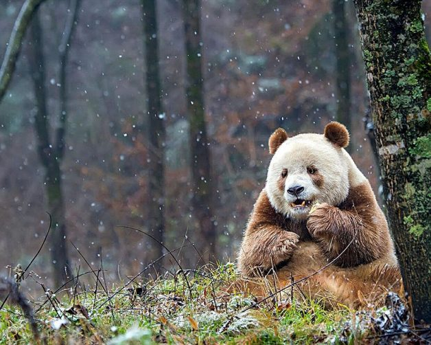

Pandas
Essa é a camera secreta desses incriveis seres
Curiosidades
Esse site é o nº 1 entre os pandas de todo mundo, justamente por
conter uma temática de bamboo e grandes homenagens a eles !
(PS: eles são espionados secretamente 24 horas por dia através desse link)
QIZAI, o último panda marrom
Esse é Qizai, o último panda marrom do mundo, um fato interessante é que recentemente, após passar sua vida inteira sozinho, ele encontrou uma parceira !